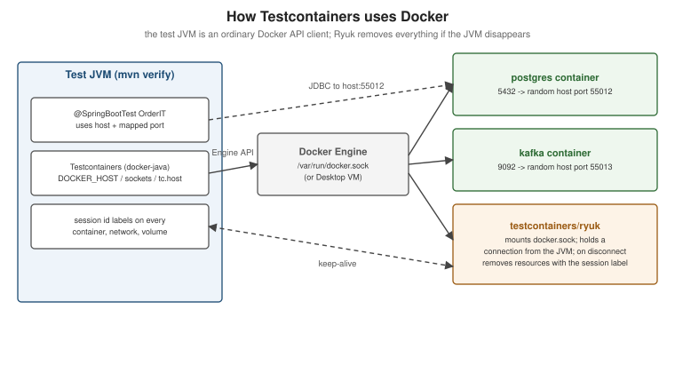

Testcontainers Fundamentals
|
This content was generated with the assistance of AI and should be verified against the official documentation before being relied on in production. |
Testcontainers is a library that starts real services — databases, brokers, mocks, whole Compose stacks — in
throwaway containers from test code, and cleans them up afterwards. It turns "integration test against a real
PostgreSQL" into a few lines of Java. This page explains how it works on top of Docker and how its API is organised
in Testcontainers for Java 2.0.5 (the version Spring Boot 4.1.x manages), on Java 25 with Docker Engine 29.8.x or
Docker Desktop 4.91 or later. The Spring Boot integration (@ServiceConnection, containers as beans, the house
Compose harness, CI) is on
Spring Boot Integration Tests with
Testcontainers; @SpringBootTest itself and the basic @Container/@ServiceConnection pattern are on
Unit and Integration Testing.
How Testcontainers uses Docker
Testcontainers is a Docker API client (it embeds docker-java). When a test starts a container, the library talks
to the Docker daemon exactly as the docker CLI would: pulls the image, creates and starts the container with a
random host port for every exposed port, waits until the service is ready, and hands the test the host and mapped
port to connect to.

How Testcontainers finds Docker
Testcontainers tries a list of strategies and uses the first daemon that answers:
-
tc.hostin~/.testcontainers.properties(the setting Testcontainers Desktop writes). -
The
DOCKER_HOSTenvironment variable (withDOCKER_TLS_VERIFYandDOCKER_CERT_PATH), or the equivalentdocker.hostproperties. -
Well-known sockets:
/var/run/docker.sock, Docker Desktop’s~/.docker/run/docker.sock(macOS) or~/.docker/desktop/docker.sock(Linux), the rootless socket under$XDG_RUNTIME_DIR, and the named pipe on Windows.
Docker CLI contexts are not consulted, so a non-default daemon (Colima, Podman, a remote host) is selected with
DOCKER_HOST. Two more variables matter when the Docker host is not localhost:
-
TESTCONTAINERS_HOST_OVERRIDE— the host name or IP where mapped ports are reachable (for example Colima’s VM address). -
TESTCONTAINERS_DOCKER_SOCKET_OVERRIDE— the socket path inside the VM, used by containers that themselves need the Docker API (Ryuk, containerised Compose).
Every ~/.testcontainers.properties key can also be given as an environment variable: upper-case it, replace dots
with underscores and prefix TESTCONTAINERS_ (ryuk.disabled becomes TESTCONTAINERS_RYUK_DISABLED). Derived from
General Container runtime requirements and
Custom configuration.
Ryuk, the resource reaper
The first time Testcontainers talks to a daemon it starts a small testcontainers/ryuk container, which mounts the
Docker socket and keeps a connection open to the test JVM. Every container, network, volume and image
Testcontainers creates is labelled with the session ID; when the JVM exits — normally, by a crash, or because you
stopped the debugger — the connection drops and Ryuk removes everything with that label. This is why Testcontainers
suites do not leak containers even when @AfterAll never runs.
Ryuk needs to mount the Docker socket and, on some platforms, run privileged. Where that is impossible (rootless
Podman, some locked-down CI systems) it can be disabled with TESTCONTAINERS_RYUK_DISABLED=true — at the price of
cleaning up yourself.
The 2.0 artifact and package model
Testcontainers 2.0 reorganised the Java library. Every page in this section uses the 2.0 names:
| 1.x (historical) | 2.0 | |
|---|---|---|
Core artifact |
|
|
JUnit 5 extension |
|
|
Modules |
|
|
Module classes |
|
|
JUnit 4 |
|
Removed from core; use JUnit 5 (Jupiter) |
The old class names still exist in several 2.0 modules as deprecated shims for migration; do not use them in new
code. Core classes keep their packages (org.testcontainers.containers.GenericContainer,
org.testcontainers.containers.ComposeContainer, org.testcontainers.containers.wait.strategy.Wait,
org.testcontainers.utility.DockerImageName). With Spring Boot 4.1 the BOM manages every version:
<dependency>
<groupId>org.testcontainers</groupId>
<artifactId>testcontainers-junit-jupiter</artifactId>
<scope>test</scope>
</dependency>
<dependency>
<groupId>org.testcontainers</groupId>
<artifactId>testcontainers-postgresql</artifactId>
<scope>test</scope>
</dependency>Derived from Jupiter / JUnit 5, Postgres Module and the Testcontainers for Java release notes.
GenericContainer
Any image can be run with GenericContainer:
import org.testcontainers.containers.GenericContainer;
import org.testcontainers.containers.Network;
import org.testcontainers.containers.output.Slf4jLogConsumer;
import org.testcontainers.containers.wait.strategy.Wait;
import org.testcontainers.images.builder.Transferable;
import org.testcontainers.utility.DockerImageName;
import org.testcontainers.utility.MountableFile;
Network network = Network.newNetwork();
GenericContainer<?> nginx = new GenericContainer<>(DockerImageName.parse("nginx:1.29"))
.withExposedPorts(80) // container port; host port is random
.withEnv("NGINX_ENTRYPOINT_QUIET_LOGS", "1")
.withCopyFileToContainer(MountableFile.forClasspathResource("static/index.html"),
"/usr/share/nginx/html/index.html")
.withNetwork(network)
.withNetworkAliases("web") // other containers on `network` reach it as web:80
.withLogConsumer(new Slf4jLogConsumer(org.slf4j.LoggerFactory.getLogger("nginx")))
.waitingFor(Wait.forHttp("/").forStatusCode(200));
nginx.start();
String url = "http://" + nginx.getHost() + ":" + nginx.getMappedPort(80) + "/";
var result = nginx.execInContainer("nginx", "-v"); // run a command inside, get exit code and output
nginx.stop();Never hard-code localhost or a fixed port: getHost() is not localhost on remote or VM-based daemons, and
the host port is random precisely so that parallel builds cannot collide. Derived from
Creating a container,
Networking and communicating with containers,
Files and volumes,
Accessing container logs and
Executing commands.
Wait strategies
A started container is not a ready service. Testcontainers waits (60 seconds by default) using a strategy:
| Strategy | Ready when |
|---|---|
|
The first exposed port accepts connections — the weakest signal. |
|
An HTTP endpoint answers as expected. |
|
A log line appears the given number of times. |
|
The image’s |
|
A command inside the container exits with 0. |
Modules ship sensible defaults (PostgreSQLContainer waits for the "ready to accept connections" log line), and
.withStartupTimeout(Duration.ofMinutes(2)) extends the limit. Derived from
Waiting for containers to start or be ready.
The JUnit 5 extension and container lifecycles
import org.junit.jupiter.api.Test;
import org.testcontainers.junit.jupiter.Container;
import org.testcontainers.junit.jupiter.Testcontainers;
import org.testcontainers.postgresql.PostgreSQLContainer;
@Testcontainers
class OrderRepositoryIT {
@Container // static: started once before all tests of the class, stopped after them
static PostgreSQLContainer postgres = new PostgreSQLContainer("postgres:18.1");
@Test
void connects() throws Exception {
try (var connection = java.sql.DriverManager.getConnection(
postgres.getJdbcUrl(), postgres.getUsername(), postgres.getPassword())) {
org.assertj.core.api.Assertions.assertThat(connection.isValid(2)).isTrue();
}
}
}-
A static
@Containerfield is shared by all tests in the class; an instance field restarts for every test method — isolated but slow. -
Singleton containers: to share one container across all test classes, start it in a static initializer of a base class (no
@Container); Ryuk stops it when the JVM exits. This is the pattern behind the houseAbstractIT. -
Manual lifecycle: call
start()/stop()yourself (or use try-with-resources) when a container is needed only for part of a test.
Derived from Jupiter / JUnit 5 and Manual container lifecycle control.
ComposeContainer: an existing compose.yaml
ComposeContainer starts the services of a Compose file and exposes chosen ports through a small ambassador
container, so the Compose file does not need to publish anything for the tests:
import java.io.File;
import org.testcontainers.containers.ComposeContainer;
import org.testcontainers.containers.wait.strategy.Wait;
import org.testcontainers.utility.DockerImageName;
ComposeContainer environment = new ComposeContainer(
DockerImageName.parse("docker:29.8.1-cli"), // runs `docker compose` inside this image
new File("../compose.yaml"))
.withCopyFilesInContainer("wiremock") // copy only compose.yaml and ./wiremock
.withExposedService("postgres", 5432, Wait.forHealthcheck())
.withExposedService("kafka", 9092, Wait.forHealthcheck())
.withStartupTimeout(java.time.Duration.ofMinutes(3));
environment.start();
String host = environment.getServiceHost("postgres", 5432);
int port = environment.getServicePort("postgres", 5432);The constructor chooses how Compose runs: the (DockerImageName, File…) form runs docker compose inside that
image (the documented form — no Compose installation needed on the test machine); the older (File…)
constructors use the local docker compose binary. The containerised form copies every file in the directory that
holds compose.yaml (typically the repository root, .git and target/ included) into that image’s container
unless withCopyFilesInContainer(…) lists the paths to copy — relative to the Compose file, which is always
copied; here wiremock, the directory the house compose.yaml bind-mounts into its wiremock service. The option
applies only to the containerised form. The 1.x withLocalCompose(…) method no longer exists. Service
names are the Compose service names (Testcontainers appends the -1 instance suffix itself). Derived from
Docker Compose Module. How the house harness uses it is on
Spring
Boot Integration Tests with Testcontainers.
Modules
Modules wrap an image with a typed API, a correct wait strategy and helpers (getJdbcUrl(),
getBootstrapServers()). Those used elsewhere in this repository:
| Technology | Artifact / class (2.0) | Where this repository uses it |
|---|---|---|
PostgreSQL (and MySQL, MariaDB, …) |
|
|
Kafka |
|
|
RabbitMQ |
|
|
MongoDB (and Atlas Local) |
|
|
Elasticsearch |
|
|
Solr |
|
|
Object storage (LocalStack, MinIO, S3Mock, Azurite, fake-gcs-server) |
|
File storage and object stores (which explains the current licensing of LocalStack and MinIO) |
Keycloak |
Community module |
|
WireMock |
Community module |
|
MockServer |
|
— |
Redis |
|
— |
Community modules are released on their own schedule; check that the version you use supports Testcontainers 2.0. Derived from the database modules and the individual module pages under Modules.
Reuse mode (local only)
Reusable containers survive the JVM, so the next run skips start-up entirely. Enable it per machine and per container:
# ~/.testcontainers.properties -- on developer machines only
testcontainers.reuse.enable=truestatic PostgreSQLContainer postgres = new PostgreSQLContainer("postgres:18.1").withReuse(true);
static { postgres.start(); } // manual start; no @Container, which would stop itReuse is experimental and meant for local iteration: reused containers are not removed by Ryuk, keep their data between runs, and must never be enabled in CI, where a fresh environment per run is the point. Derived from Reusable Containers.
Image pulls and rate limits
Testcontainers pulls images from Docker Hub by default — the images your tests use plus its own helpers (Ryuk,
alpine for startup checks, the Compose image). In CI, authenticate to Docker Hub (Testcontainers reads the same
~/.docker/config.json credentials as the CLI), or redirect every Docker Hub image to a mirror:
# ~/.testcontainers.properties or TESTCONTAINERS_HUB_IMAGE_NAME_PREFIX
hub.image.name.prefix=registry.example.com/dockerhub-mirror/withImagePullPolicy(PullPolicy.alwaysPull()) forces a fresh pull when a tag is known to move. Derived from
Image Registry rate
limiting and Image name substitution; the CI
side is on Registries
and Docker Hub.
Supported environments
| Environment | Notes |
|---|---|
Docker Desktop (macOS, Windows, Linux) |
Works out of the box. |
Docker Engine on Linux (including GitHub-hosted |
Works out of the box via |
Remote Docker host |
|
Colima |
|
Podman |
|
Rancher Desktop |
Point |
Testcontainers Desktop / Testcontainers Cloud |
A desktop app that manages the runtime and can run containers in Docker’s cloud; named here only. |
Derived from General Container runtime requirements; see Testcontainers Desktop and Testcontainers Cloud.